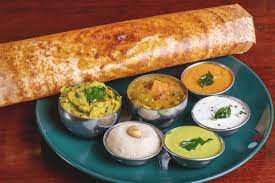
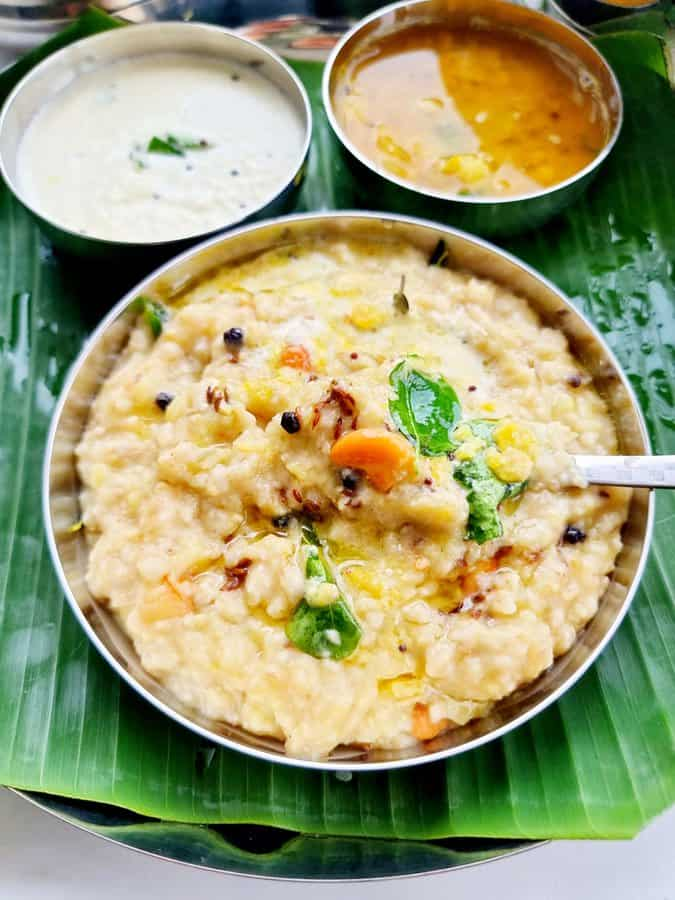

Dosa
A crispy, thin pancake made from fermented rice and lentil batter. Perfect with chutneys and sambar.
Special Note: Dosa is a staple South Indian breakfast item known for its crunchy texture and versatile fillings.

Idly
Soft, fluffy steamed rice cakes made from a fermented batter of rice and lentils. Ideal for breakfast or dinner.
Special Note: Idly is renowned for its lightness and is often paired with sambar and coconut chutney.

Pongal
A savory rice and lentil porridge, cooked with spices and garnished with cashews and black pepper.
Special Note: Pongal is a comforting dish often enjoyed during festivals and special occasions.